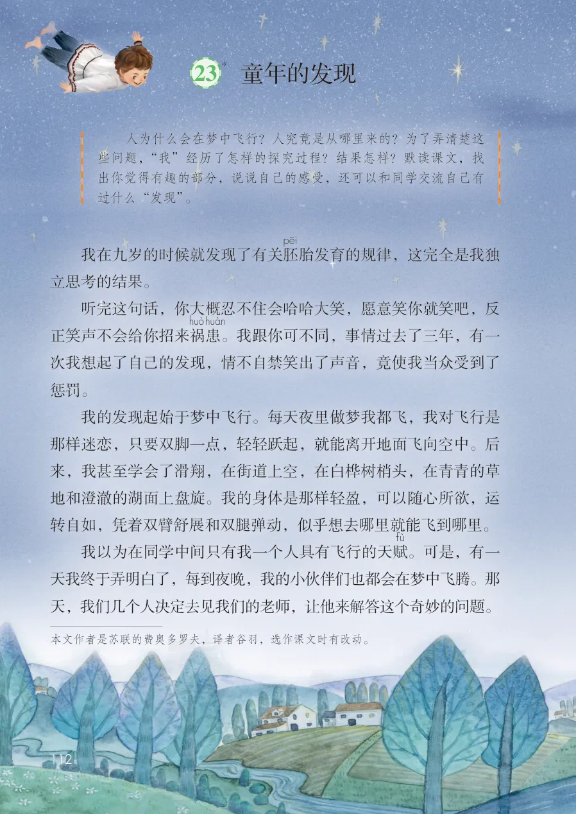
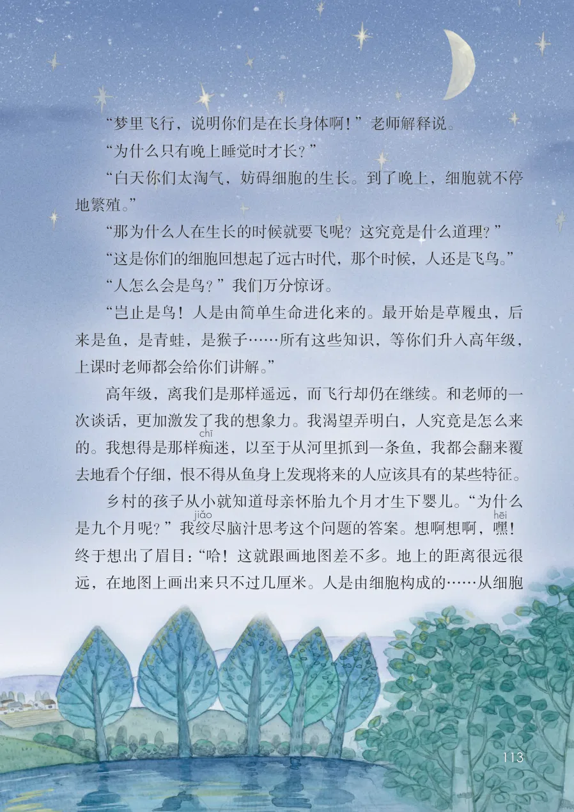
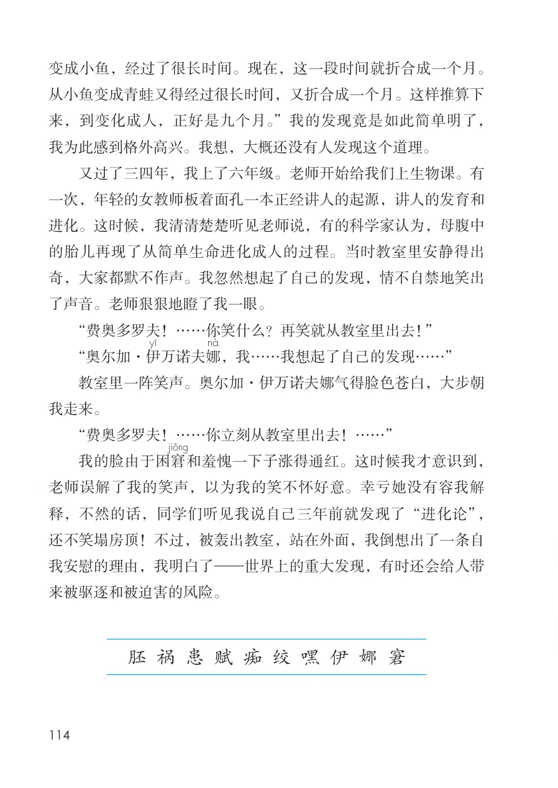

展开章节菜单
*23 童年的发现
我在九岁的时候就发现了有关胚
胎发育的规律，这完全是我独立思考的结果。
听完这句话，你大概忍不住会哈哈大笑，愿意笑你就笑吧，反
。我跟你可不同，事情过去了三年，有一次我想起了自己的发现，情不自禁笑出了声音，竟使我当众受到了惩罚。
我的发现起始于梦中飞行。每天夜里做梦我都飞，我对飞行是那样迷恋，只要双脚一点，轻轻跃起，就能离开地面飞向空中。后来，我甚至学会了滑翔，在街道上空，在白桦树梢头，在青青的草地和澄澈的湖面上盘旋。我的身体是那样轻盈，可以随心所欲，运转自如，凭着双臂舒展和双腿弹动，似乎想去哪里就能飞到哪里。
。可是，有一天我终于弄明白了，每到夜晚，我的小伙伴们也都会在梦中飞腾。那天，我们几个人决定去见我们的老师，让他来解答这个奇妙的问题。
查看教材原页（保留全部图片、注音与原始排版）

“梦里飞行，说明你们是在长身体啊！”老师解释说。
“为什么只有晚上睡觉时才长？”
“白天你们太淘气，妨碍细胞的生长。到了晚上，细胞就不停
地繁殖。”
“那为什么人在生长的时候就要飞呢？这究竟是什么道理？”
“这是你们的细胞回想起了远古时代，那个时候，人还是飞鸟。”
“人怎么会是鸟？”我们万分惊讶。
“岂止是鸟！人是由简单生命进化来的。最开始是草履虫，后
来是鱼，是青蛙，是猴子……所有这些知识，等你们升入高年级，
上课时老师都会给你们讲解。”
高年级，离我们是那样遥远，而飞行却仍在继续。和老师的一
次谈话，更加激发了我的想象力。我渴望弄明白，人究竟是怎么来
的。我想得是那样痴
迷，以至于从河里抓到一条鱼，我都会翻来覆
去地看个仔细，恨不得从鱼身上发现将来的人应该具有的某些特征。
乡村的孩子从小就知道母亲怀胎九个月才生下婴儿。“为什么
是九个月呢？”我绞
尽脑汁思考这个问题的答案。想啊想啊，嘿
！
终于想出了眉目：“哈！这就跟画地图差不多。地上的距离很远很
远，在地图上画出来只不过几厘米。人是由细胞构成的……从细胞
查看教材原页（保留全部图片、注音与原始排版）

变成小鱼，经过了很长时间。现在，这一段时间就折合成一个月。从小鱼变成青蛙又得经过很长时间，又折合成一个月。这样推算下来，到变化成人，正好是九个月。”我的发现竟是如此简单明了，我为此感到格外高兴。我想，大概还没有人发现这个道理。
又过了三四年，我上了六年级。老师开始给我们上生物课。有一次，年轻的女教师板着面孔一本正经讲人的起源，讲人的发育和进化。这时候，我清清楚楚听见老师说，有的科学家认为，母腹中的胎儿再现了从简单生命进化成人的过程。当时教室里安静得出奇，大家都默不作声。我忽然想起了自己的发现，情不自禁地笑出了声音。老师狠狠地瞪了我一眼。
“费奥多罗夫！……你笑什么？再笑就从教室里出去！”
“奥尔加·伊
，我……我想起了自己的发现……”
教室里一阵笑声。奥尔加·伊万诺夫娜气得脸色苍白，大步朝我走来。
“费奥多罗夫！……你立刻从教室里出去！……”
和羞愧一下子涨得通红。这时候我才意识到，老师误解了我的笑声，以为我的笑不怀好意。幸亏她没有容我解释，不然的话，同学们听见我说自己三年前就发现了“进化论”，还不笑塌房顶！不过，被轰出教室，站在外面，我倒想出了一条自我安慰的理由，我明白了—世界上的重大发现，有时还会给人带来被驱逐和被迫害的风险。
查看教材原页（保留全部图片、注音与原始排版）
